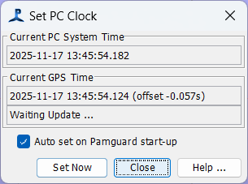
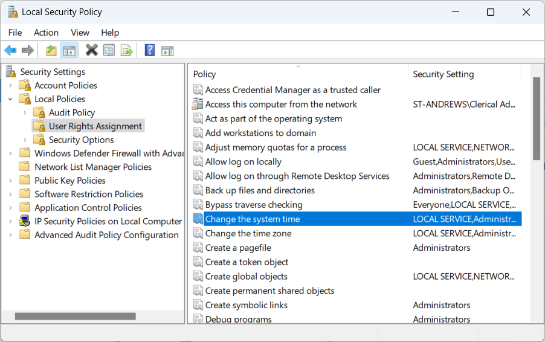
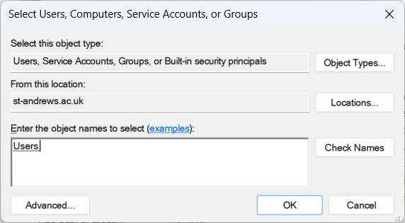

Accurate timing is critical to many survey and mitigation
exercises.
All timing within PAMGuard uses the Universal Time Code (equivalent to GMT) which is read from the PC clock.
The PC Clock can be set from the GPS, which receives an accurate time stamp from satellites.
Select the menu Detection>GPS>Update PC Clock to open the dialog

The upper text area shows the current PC time. When GPS data
are received, the correct time will be printed in the lower text area
and you are given the option of setting the PC clock from the GPS
data.
Check "Auto set on PAMGuard start-up" and the PC clock will automatically be set from the GPS each time PAMGuard starts. Time Zones
Note that PAMGuard sets and reads the PC clock in such as way that the local time, (for instance, as shown in the Windows task bar) may show a time different to UTC as governed by the time zone and daylight savings settings of your computer. Don't worry - this is perfectly normal. The correct UTC time as used by PAMGuard is clearly visible on the GUI display. Setting the PC clock by hand from the control panel is likely to set the incorrect UTC in the machine.
Since Windows 10, it has not been possible to automatically update the PC clock from PAMGuard unless you make some small changes to the Windows security settings. This needs to be done by someone with Administrator privileges on the PC, but only needs to be done once.
These instructions are based on those at Fortect Windows Optimization tips.
Open the Local Security Policy configuration by typing 'secpol', or 'local security policy' in the Windows task bar.

Go into Local Policies User Rights Assignment and double click on Change the system time.

Where is says Enter object names to select, type Users.
Click on Check Names (optional) and OK.
Click OK again to close the Local Security Policy manager.
Restart your computer for the changes to take effect.